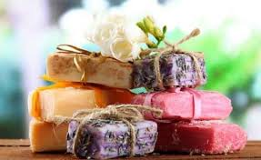

PRESERVAR A CULTURA E A TRADIÇÃO

Sabonetes
Esse tipo de arte busca transformar resíduos como papel, papelão, madeira, vidro, plásticos, metais ou borracha em obras de arte. Portanto, o conceito vai mais além da reciclagem convencional de materiais, pois cria objetos que superam o valor econômico, cultural e social do produto original.
Quais são 5 objetos que podemos reciclar?
Reciclável: Enlatados, Tampinhas de Garrafas, Chapas, Latas, Ferragens, Arames, Talheres de metal, Panelas sem cabo, Papel alumínio limpo, Canos, Pregos, Aerossóis, Cobre, Embalagem de marmitex.
©2026 Artesanato na Guiné-Bissau